PRS
Last updated: 2025-05-13
Checks: 7 0
Knit directory: prs/
This reproducible R Markdown analysis was created with workflowr (version 1.7.1). The Checks tab describes the reproducibility checks that were applied when the results were created. The Past versions tab lists the development history.
Great! Since the R Markdown file has been committed to the Git repository, you know the exact version of the code that produced these results.
Great job! The global environment was empty. Objects defined in the global environment can affect the analysis in your R Markdown file in unknown ways. For reproduciblity it’s best to always run the code in an empty environment.
The command set.seed(20250417) was run prior to running
the code in the R Markdown file. Setting a seed ensures that any results
that rely on randomness, e.g. subsampling or permutations, are
reproducible.
Great job! Recording the operating system, R version, and package versions is critical for reproducibility.
Nice! There were no cached chunks for this analysis, so you can be confident that you successfully produced the results during this run.
Great job! Using relative paths to the files within your workflowr project makes it easier to run your code on other machines.
Great! You are using Git for version control. Tracking code development and connecting the code version to the results is critical for reproducibility.
The results in this page were generated with repository version c5d5446. See the Past versions tab to see a history of the changes made to the R Markdown and HTML files.
Note that you need to be careful to ensure that all relevant files for
the analysis have been committed to Git prior to generating the results
(you can use wflow_publish or
wflow_git_commit). workflowr only checks the R Markdown
file, but you know if there are other scripts or data files that it
depends on. Below is the status of the Git repository when the results
were generated:
Ignored files:
Ignored: .DS_Store
Ignored: .Rhistory
Ignored: .Rproj.user/
Ignored: analysis/.DS_Store
Ignored: data/.DS_Store
Untracked files:
Untracked: analysis/continuous/
Untracked: analysis/metadata.txt
Untracked: analysis/metadata_quantile.txt
Untracked: analysis/normalized_counts.rda
Untracked: analysis/quantile/
Untracked: analysis/validation.Rmd
Untracked: analysis/vst norm counts.rda
Untracked: data/Artery_Aorta.v8.covariates.txt
Untracked: data/GTEx_v8.bk
Untracked: data/GTEx_v8.rds
Untracked: data/Whole_Blood.v8.covariates.txt
Untracked: data/blood_cell/
Untracked: data/gene_reads_2017-06-05_v8_artery_aorta.gct.gz
Untracked: data/gene_reads_2017-06-05_v8_whole_blood.gct
Untracked: data/gene_tpm_2017-06-05_v8_whole_blood.gct.gz
Untracked: data/immune/
Untracked: data/protein-coding_gene.txt
Unstaged changes:
Deleted: analysis/QC.Rmd
Deleted: analysis/normalized_counts.txt
Modified: analysis/prs_blood_cell.txt
Modified: prs.Rproj
Note that any generated files, e.g. HTML, png, CSS, etc., are not included in this status report because it is ok for generated content to have uncommitted changes.
These are the previous versions of the repository in which changes were
made to the R Markdown (analysis/PRS.Rmd) and HTML
(docs/PRS.html) files. If you’ve configured a remote Git
repository (see ?wflow_git_remote), click on the hyperlinks
in the table below to view the files as they were in that past version.
| File | Version | Author | Date | Message |
|---|---|---|---|---|
| Rmd | c5d5446 | ElisaChen | 2025-05-13 | workflowr::wflow_publish(c("analysis/PRS.Rmd", "analysis/index.Rmd", |
| html | eba00c6 | ElisaChen | 2025-04-24 | Build site. |
| Rmd | 077b30f | ElisaChen | 2025-04-24 | wflow_publish(c("analysis/index.Rmd", "analysis/about.Rmd", "analysis/license.Rmd", |
| Rmd | 7338250 | ElisaChen | 2025-04-17 | first commit |
Function to calculate PRS for each SNP file
calculate_prs <- function(file_path, snp_prs, map, geno, common_snp, sample) {
# Match the SNPs with the map
common_snp <- snp_match(snp_prs, map)
names(common_snp) <- c("chr", "pos", "effect_allele", "other_allele", "beta", "rsid",
"prs_index", "map_index")
common_snp <- cbind(common_snp, map[common_snp$map_index, 3:4])
common_snp$rsid <- ifelse(common_snp$rsid == "",
paste0("chr", common_snp$chr, "_", common_snp$pos),
common_snp$rsid)
# Extract genotype data
geno_snp <- geno[, common_snp$map_index]
colnames(geno_snp) <- common_snp$rsid
# Initialize an empty matrix to store the PRS values
prs_matrix <- matrix(0, nrow = nrow(geno_snp), ncol = ncol(geno_snp))
# Loop through each SNP and calculate PRS for each individual
for (snp_index in 1:ncol(geno_snp)) {
snp_name <- colnames(geno_snp)[snp_index]
snp_data <- common_snp[common_snp$rsid == snp_name, ]
effect_allele <- snp_data$effect_allele
effect_weight <- snp_data$beta
a1 <- snp_data$a1
a0 <- snp_data$a0
# Loop through each individual (sample)
for (sample_index in 1:nrow(geno_snp)) {
genotype <- geno_snp[sample_index, snp_index]
# Handle NA genotypes and calculate PRS
if (is.na(genotype)) {
prs_matrix[sample_index, snp_index] <- 0 # No contribution to PRS for this SNP
} else {
if (effect_allele == a1) {
if (genotype == 0) {
prs_matrix[sample_index, snp_index] <- 2 * effect_weight
} else if (genotype == 1) {
prs_matrix[sample_index, snp_index] <- effect_weight
} else if (genotype == 2) {
prs_matrix[sample_index, snp_index] <- 2 * effect_weight
}
} else if (effect_allele == a0) {
if (genotype == 0) {
prs_matrix[sample_index, snp_index] <- 2 * effect_weight
} else if (genotype == 1) {
prs_matrix[sample_index, snp_index] <- effect_weight
} else if (genotype == 2) {
prs_matrix[sample_index, snp_index] <- 2 * effect_weight
}
}
}
}
}
# Calculate total PRS for each individual (sum across all SNPs)
total_prs <- rowSums(prs_matrix)
# Return a dataframe with sample IDs and total PRS for this file
prs_data <- data.frame(sample = sample, total_prs = total_prs)
return(prs_data)
}Data Preparation
# read in genotype data (only need to do once for each data set)
# snp_readBed("data/GTEx_v8.bed")
# attach the genotype object
obj.bigSNP <- snp_attach("data/GTEx_v8.rds")
# extract the SNP information from the genotype
map <- obj.bigSNP$map[,c(1, 4:6)]
names(map) <- c("chr", "pos", "a1", "a0")
# extract genotype data
geno <- obj.bigSNP$genotypes
# Get the sample IDs from plink fam file
sample <- obj.bigSNP$fam$sample.IDPRS for blood cell trait
# Get list of all SNP files in the blood_cell folder
snp_files <- list.files("data/blood_cell",
pattern = "*.txt", full.names = TRUE)
# Initialize an empty list to store the PRS data for all files
all_prs_data <- list()
# Loop through each file and calculate the PRS
for (file_path in snp_files) {
# Read in SNP_PRS data
snp_prs <- fread(file_path, header = TRUE, stringsAsFactors = FALSE)
snp_prs <- snp_prs[, c(4:6, 8:10)]
snp_prs$hm_chr <- as.integer(snp_prs$hm_chr)
names(snp_prs) <- c("a1", "a0", "beta", "rsid", "chr", "pos")
# calculate PRS
prs_data <- calculate_prs(file_path, snp_prs, map, geno, common_snp, sample)
file_name <- gsub(".*/(PGS[0-9]+)_hmPOS_GRCh38.txt", "\\1", file_path)
colnames(prs_data) <- c("sample_id", file_name)
all_prs_data[[file_name]] <- prs_data
}
# Combine the PRS data for all files into one dataframe
final_prs_df <- Reduce(function(x, y) merge(x, y, by = "sample_id", all = TRUE), all_prs_data)
head(final_prs_df)
#write.table(final_prs_df, "prs_blood_trait.txt", sep="\t", row.names = F, col.names = T)PRS for immune traits
convert genome build (hg19 tp hg38)
# Load the chain file for liftOver
library(rtracklayer)
path = system.file(package="liftOver", "extdata", "hg19ToHg38.over.chain")
chain = import.chain(path)
chain
str(chain[[1]])
# Get list of all SNP files in the immune folder
immune_files <- list.files("data/immune", pattern = "*.txt", full.names = TRUE)
# Function to perform liftOver and modify chromosome labels
process_file <- function(file_path, chain) {
# Read in SNP_PRS data
snp_prs <- fread(file_path, header = TRUE, stringsAsFactors = FALSE)
names(snp_prs) <- c("chr", "rsid", "pos", "a1", "a0", "beta")
# Create a GRanges object for the SNP positions
snp_gr <- GRanges(
seqnames = paste0("chr", snp_prs$chr), # Add "chr" prefix
ranges = IRanges(start = snp_prs$pos, end = snp_prs$pos),
rsid = snp_prs$rsid
)
# Perform liftOver from hg19 to hg38
seqlevelsStyle(snp_gr) = "UCSC"
snp_gr_hg38 <- liftOver(snp_gr, chain)
# Convert the lifted GRanges object back to a data frame
lifted_positions <- as.data.frame(snp_gr_hg38)
# Merge the lifted positions with the original SNP data
final_snp_data <- cbind(snp_prs, lifted_positions[, c("seqnames", "start")])
names(final_snp_data)[ncol(final_snp_data)-1] <- "chr_hg38"
names(final_snp_data)[ncol(final_snp_data)] <- "pos_hg38"
# Convert 'chr_hg38' from 'chr1', 'chr2', etc. to '1', '2', etc.
final_snp_data$chr_hg38 <- as.integer(gsub("chr", "", final_snp_data$chr_hg38))
# Save the result as a new text file
output_file <- paste0(tools::file_path_sans_ext(basename(file_path)), "_hg38.txt")
write.table(final_snp_data, output_file, row.names = FALSE, col.names = TRUE, quote = FALSE, sep = "\t")
return(output_file) # Return the output file name
}
# Loop through each file and process it
output_files <- sapply(immune_files, process_file, chain = chain)compute PRS
# Get list of all hg38-aligned SNP files in the immune folder
immune_hg38_files <- list.files("data/immune", pattern = "hg38.*\\.txt", full.names = TRUE)
# Initialize an empty list to store the PRS data for all files
all_prs_immune <- list()
# Loop through each file and calculate the PRS
for (file_path in immune_hg38_files) {
# Read in SNP_PRS data
snp_prs <- fread(file_path, header = TRUE, stringsAsFactors = FALSE)
snp_prs <- snp_prs[,c(4:6, 2, 7:8)]
names(snp_prs) <- c("a1", "a0", "beta", "rsid", "chr", "pos")
# calculate PRS
prs_data <- calculate_prs(file_path, snp_prs, map, geno, common_snp, sample)
file_name <- gsub("^([^_]+_[^_]+).*", "\\1", basename(file_path))
colnames(prs_data) <- c("sample_id", file_name)
all_prs_immune[[file_name]] <- prs_data
}
# Combine the PRS data for all files into one dataframe
final_prs_df <- Reduce(function(x, y) merge(x, y, by = "sample_id", all = TRUE), all_prs_immune)
head(final_prs_df)
#write.table(final_prs_df, "prs_immune.txt", sep="\t", row.names = F, col.names = T)Check the distribution of PRS for each blood cell trait
prs_blood <- fread("analysis/prs_blood_cell.txt", header = TRUE,
stringsAsFactors = FALSE)
head(prs_blood) sample_id Basophil count Basophil percentage of white cells
<char> <num> <num>
1: GTEX-1117F 0.3806469 0.8780380
2: GTEX-111CU 0.2064739 0.7548888
3: GTEX-111FC 0.1510253 0.8561732
4: GTEX-111VG 0.0782434 0.7029858
5: GTEX-111YS 0.5410653 1.0156237
6: GTEX-1122O 0.2568363 0.9157099
Eosinophil count Eosinophil percentage of white cells Hematocrit
<num> <num> <num>
1: -3.713591 -3.229141 0.4163683
2: -3.949216 -3.695229 0.2869358
3: -3.837647 -3.134617 -0.3309690
4: -3.875660 -3.109327 0.1998405
5: -3.584264 -3.380372 0.0788395
6: -4.195580 -3.219698 0.4280533
Hemoglobin concentration High light scatter reticulocyte count
<num> <num>
1: 2.136815 4.434960
2: 1.723604 4.130046
3: 1.225690 4.412963
4: 1.925761 3.979648
5: 1.386430 4.759111
6: 2.024007 4.202698
High light scatter reticulocyte percentage of red cells
<num>
1: 4.372898
2: 4.525788
3: 4.595019
4: 4.393256
5: 4.850884
6: 4.515898
Immature fraction of reticulocytes Lymphocyte count
<num> <num>
1: 2.883154 0.2446934
2: 2.628253 -0.0900860
3: 3.133287 -0.2846926
4: 2.745925 -0.0435285
5: 3.073905 -0.0895070
6: 3.180095 0.1487145
Lymphocyte percentage of white cells Mean corpuscular hemoglobin
<num> <num>
1: 0.3569089 2.661169
2: -0.0592994 2.500414
3: -0.1086845 2.878752
4: 0.0491368 2.840849
5: 0.2374592 2.636155
6: 0.2513990 2.790015
Mean corpuscular hemoglobin concentration Mean corpuscular volume
<num> <num>
1: 1.801754 2.324056
2: 2.050340 1.866515
3: 1.960197 2.545554
4: 1.805051 2.547886
5: 1.632886 2.411277
6: 1.781026 2.681980
Monocyte count Monocyte percentage of white cells Mean platelet volume
<num> <num> <num>
1: 1.567493 0.8574966 0.9338375
2: 1.623798 0.7156781 0.8308186
3: 1.544912 0.4508785 -0.1097440
4: 1.427934 0.1186987 0.4256803
5: 2.051295 0.9079310 0.7683186
6: 1.223256 0.0900392 1.0050662
Mean reticulocyte volume Mean sphered corpuscular volume Neutrophil count
<num> <num> <num>
1: -0.7149604 -0.1537221 -0.9485420
2: -0.5291329 -0.2985605 -1.0259112
3: -0.1745706 -0.3416134 -0.8944093
4: -1.1218271 -0.4094764 -1.0032017
5: -0.6711704 -0.1915244 -0.7245853
6: -0.7286477 -0.0609871 -1.0541924
Neutrophil percentage of white cells Platelet crit
<num> <num>
1: -0.4955733 3.032858
2: -0.4303846 1.943666
3: -0.1609818 2.499798
4: -0.3787154 2.717517
5: -0.3556682 3.317813
6: -0.5039774 2.423712
Platelet distribution width Platelet count Red blood cell count
<num> <num> <num>
1: 1.691766 0.7397075 0.9214347
2: 2.212776 0.0984095 0.6143391
3: 2.318054 1.2521282 0.3350280
4: 2.059975 1.2534249 1.0891001
5: 1.995272 1.2545477 0.5340879
6: 2.592336 0.6764149 0.9435796
Red cell distribution width Reticulocyte count
<num> <num>
1: 0.8427240 4.219304
2: 0.9863121 4.268113
3: 0.8855678 4.558498
4: 0.1868042 4.283260
5: 0.9369695 4.549213
6: 1.2345469 4.160999
Reticulocyte fraction of red cells White blood cell count
<num> <num>
1: 4.218706 -0.4845900
2: 4.450465 -0.9142476
3: 4.505412 -0.5593480
4: 4.648625 -1.0679006
5: 4.758601 -0.5033859
6: 4.367083 -0.8890277# Summary statistics for each PRS column (trait)
summary(prs_blood[,-1]) Basophil count Basophil percentage of white cells Eosinophil count
Min. :-0.1760 Min. :0.4462 Min. :-4.994
1st Qu.: 0.2311 1st Qu.:0.8050 1st Qu.:-4.179
Median : 0.3183 Median :0.8891 Median :-3.982
Mean : 0.3258 Mean :0.8893 Mean :-3.979
3rd Qu.: 0.4144 3rd Qu.:0.9760 3rd Qu.:-3.775
Max. : 0.7381 Max. :1.2485 Max. :-2.938
Eosinophil percentage of white cells Hematocrit
Min. :-4.403 Min. :-0.72700
1st Qu.:-3.561 1st Qu.:-0.08874
Median :-3.372 Median : 0.06276
Mean :-3.379 Mean : 0.05916
3rd Qu.:-3.193 3rd Qu.: 0.20001
Max. :-2.418 Max. : 0.72360
Hemoglobin concentration High light scatter reticulocyte count
Min. :0.8813 Min. :3.042
1st Qu.:1.5474 1st Qu.:3.961
Median :1.7022 Median :4.175
Mean :1.6976 Mean :4.166
3rd Qu.:1.8530 3rd Qu.:4.392
Max. :2.4055 Max. :5.231
High light scatter reticulocyte percentage of red cells
Min. :3.165
1st Qu.:4.151
Median :4.373
Mean :4.363
3rd Qu.:4.566
Max. :5.383
Immature fraction of reticulocytes Lymphocyte count
Min. :1.420 Min. :-0.8853
1st Qu.:2.501 1st Qu.:-0.3249
Median :2.683 Median :-0.1443
Mean :2.685 Mean :-0.1461
3rd Qu.:2.889 3rd Qu.: 0.0352
Max. :3.499 Max. : 0.7415
Lymphocyte percentage of white cells Mean corpuscular hemoglobin
Min. :-0.829929 Min. :1.431
1st Qu.:-0.150182 1st Qu.:2.484
Median : 0.009484 Median :2.749
Mean : 0.002973 Mean :2.737
3rd Qu.: 0.154690 3rd Qu.:3.020
Max. : 0.537481 Max. :3.869
Mean corpuscular hemoglobin concentration Mean corpuscular volume
Min. :1.265 Min. :1.105
1st Qu.:1.742 1st Qu.:2.244
Median :1.878 Median :2.508
Mean :1.871 Mean :2.518
3rd Qu.:2.003 3rd Qu.:2.796
Max. :2.353 Max. :3.719
Monocyte count Monocyte percentage of white cells Mean platelet volume
Min. :0.269 Min. :-0.8200 Min. :-0.7994
1st Qu.:1.211 1st Qu.: 0.1258 1st Qu.: 0.4226
Median :1.439 Median : 0.3566 Median : 0.6984
Mean :1.433 Mean : 0.3448 Mean : 0.7046
3rd Qu.:1.680 3rd Qu.: 0.5725 3rd Qu.: 1.0185
Max. :2.502 Max. : 1.4235 Max. : 1.9150
Mean reticulocyte volume Mean sphered corpuscular volume Neutrophil count
Min. :-1.8701 Min. :-1.2291 Min. :-1.68032
1st Qu.:-0.8858 1st Qu.:-0.1601 1st Qu.:-1.02547
Median :-0.6414 Median : 0.1272 Median :-0.85999
Mean :-0.6423 Mean : 0.1203 Mean :-0.85693
3rd Qu.:-0.3736 3rd Qu.: 0.4164 3rd Qu.:-0.70218
Max. : 0.7296 Max. : 1.3974 Max. :-0.06296
Neutrophil percentage of white cells Platelet crit
Min. :-0.77535 Min. :1.642
1st Qu.:-0.28186 1st Qu.:2.533
Median :-0.12743 Median :2.751
Mean :-0.12193 Mean :2.764
3rd Qu.: 0.02156 3rd Qu.:3.015
Max. : 0.55981 Max. :3.956
Platelet distribution width Platelet count Red blood cell count
Min. :1.016 Min. :-0.2803 Min. :-0.4268
1st Qu.:2.037 1st Qu.: 0.6965 1st Qu.: 0.3940
Median :2.277 Median : 0.9104 Median : 0.6050
Mean :2.261 Mean : 0.9262 Mean : 0.6038
3rd Qu.:2.510 3rd Qu.: 1.1664 3rd Qu.: 0.8104
Max. :3.382 Max. : 2.1380 Max. : 1.6088
Red cell distribution width Reticulocyte count
Min. :-0.1191 Min. :3.102
1st Qu.: 0.7155 1st Qu.:4.069
Median : 0.9247 Median :4.274
Mean : 0.9134 Mean :4.270
3rd Qu.: 1.1168 3rd Qu.:4.450
Max. : 1.8368 Max. :5.408
Reticulocyte fraction of red cells White blood cell count
Min. :3.319 Min. :-1.4839
1st Qu.:4.300 1st Qu.:-0.8319
Median :4.505 Median :-0.6528
Mean :4.487 Mean :-0.6482
3rd Qu.:4.689 3rd Qu.:-0.4644
Max. :5.483 Max. : 0.2692 # Loop through each PRS trait
for (trait in names(prs_blood)[-1]) { # Skip the sample_id column
# Get the data for the current trait
trait_data <- prs_blood[[trait]]
# Calculate the 25th and 75th percentiles
p25 <- quantile(trait_data, 0.25, na.rm = TRUE)
p75 <- quantile(trait_data, 0.75, na.rm = TRUE)
# Calculate the density values for the trait
trait_density <- density(trait_data, na.rm = TRUE)
# Create a data frame from the density object
density_data <- data.frame(x = trait_density$x, y = trait_density$y)
# Create the density plot
p <- ggplot(density_data, aes(x = x, y = y)) +
# Plot the density curve
geom_line(color = "black") +
# Shade the area below 25th percentile (in light blue)
geom_ribbon(data = subset(density_data, x <= p25),
aes(x = x, ymin = 0, ymax = y),
fill = "lightblue", alpha = 0.5) +
# Shade the area above 75th percentile (in light red)
geom_ribbon(data = subset(density_data, x >= p75),
aes(x = x, ymin = 0, ymax = y),
fill = "lightcoral", alpha = 0.5) +
# Add vertical lines at the 25th and 75th percentiles
geom_vline(aes(xintercept = p25), color = "blue", linetype = "dashed") +
geom_vline(aes(xintercept = p75), color = "red", linetype = "dashed") +
scale_x_continuous(breaks = c(p25, p75), labels = c("25%", "75%")) +
labs(title = paste(trait, "PRS"), y = "Density", x = "") +
theme(plot.title = element_text(hjust = 0.5)) +
theme_classic()
# Print the plot for the current trait
print(p)
}
| Version | Author | Date |
|---|---|---|
| eba00c6 | ElisaChen | 2025-04-24 |
| Version | Author | Date |
|---|---|---|
| eba00c6 | ElisaChen | 2025-04-24 |
| Version | Author | Date |
|---|---|---|
| eba00c6 | ElisaChen | 2025-04-24 |
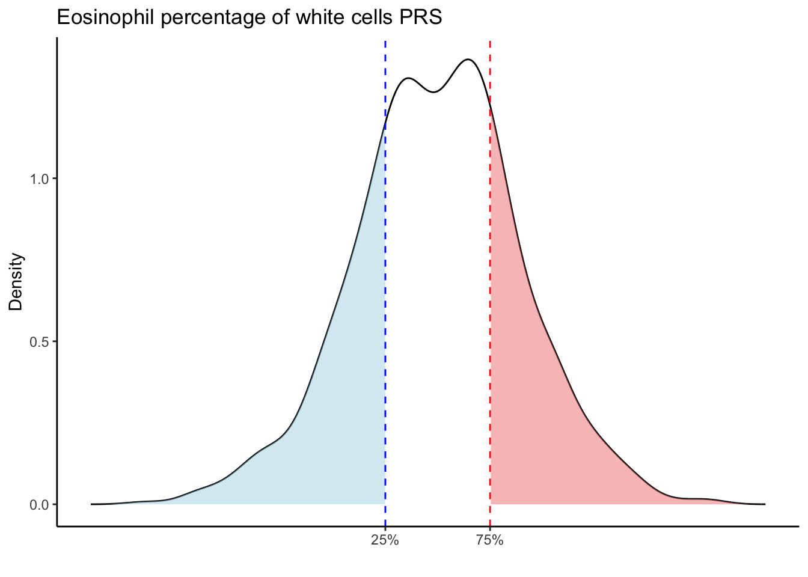
| Version | Author | Date |
|---|---|---|
| eba00c6 | ElisaChen | 2025-04-24 |
| Version | Author | Date |
|---|---|---|
| eba00c6 | ElisaChen | 2025-04-24 |
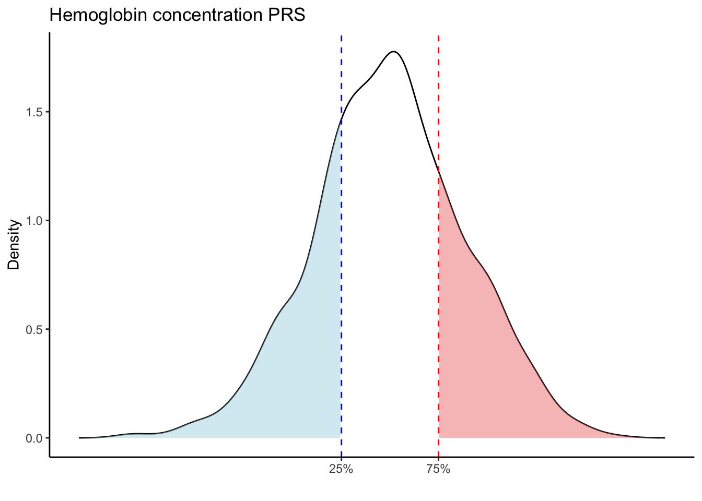
| Version | Author | Date |
|---|---|---|
| eba00c6 | ElisaChen | 2025-04-24 |
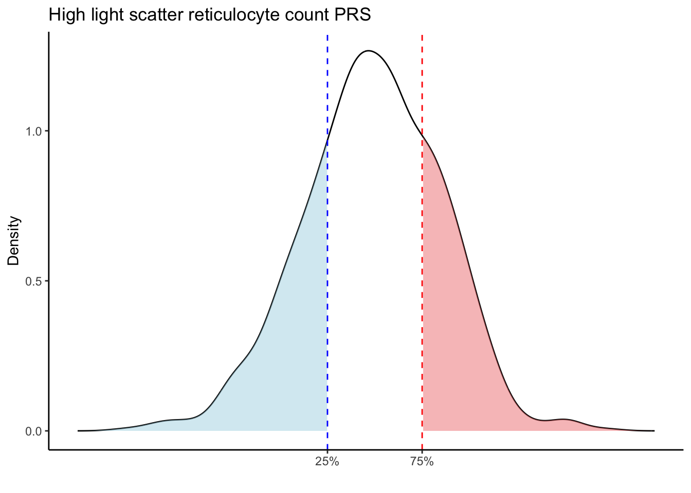
| Version | Author | Date |
|---|---|---|
| eba00c6 | ElisaChen | 2025-04-24 |
| Version | Author | Date |
|---|---|---|
| eba00c6 | ElisaChen | 2025-04-24 |
| Version | Author | Date |
|---|---|---|
| eba00c6 | ElisaChen | 2025-04-24 |
| Version | Author | Date |
|---|---|---|
| eba00c6 | ElisaChen | 2025-04-24 |
| Version | Author | Date |
|---|---|---|
| eba00c6 | ElisaChen | 2025-04-24 |
| Version | Author | Date |
|---|---|---|
| eba00c6 | ElisaChen | 2025-04-24 |
| Version | Author | Date |
|---|---|---|
| eba00c6 | ElisaChen | 2025-04-24 |
| Version | Author | Date |
|---|---|---|
| eba00c6 | ElisaChen | 2025-04-24 |
| Version | Author | Date |
|---|---|---|
| eba00c6 | ElisaChen | 2025-04-24 |
| Version | Author | Date |
|---|---|---|
| eba00c6 | ElisaChen | 2025-04-24 |
| Version | Author | Date |
|---|---|---|
| eba00c6 | ElisaChen | 2025-04-24 |
| Version | Author | Date |
|---|---|---|
| eba00c6 | ElisaChen | 2025-04-24 |
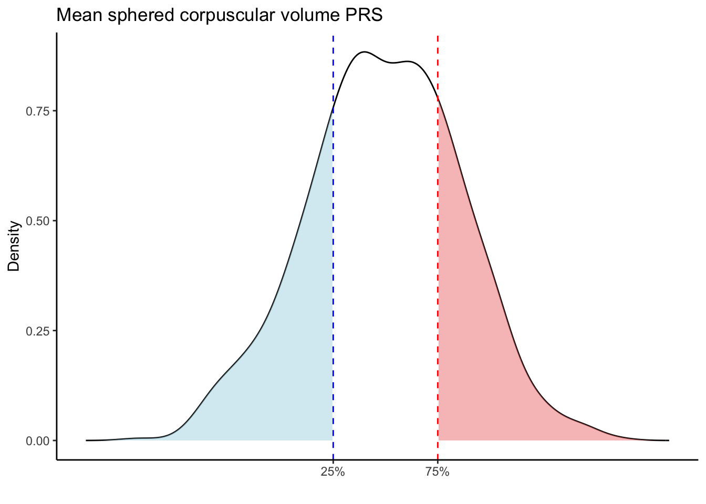
| Version | Author | Date |
|---|---|---|
| eba00c6 | ElisaChen | 2025-04-24 |
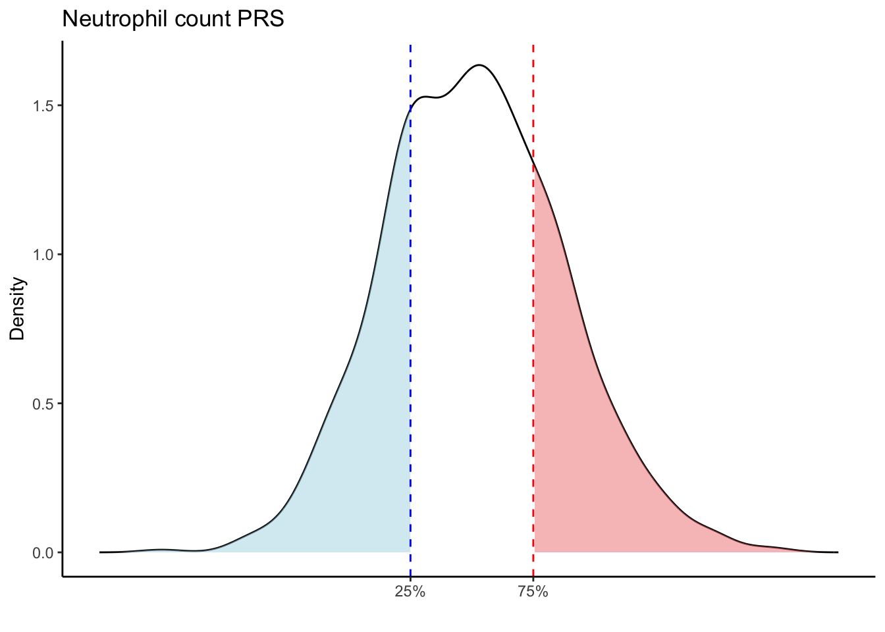
| Version | Author | Date |
|---|---|---|
| eba00c6 | ElisaChen | 2025-04-24 |
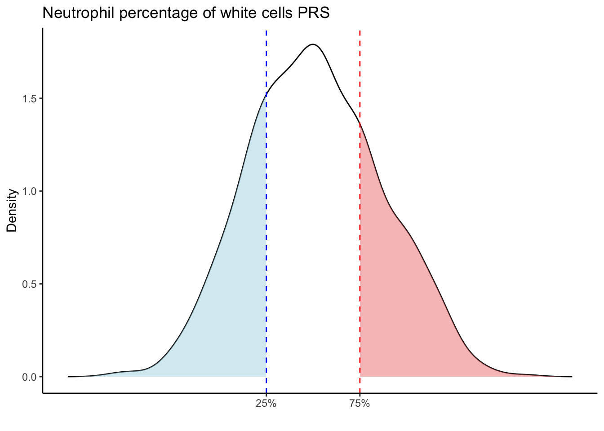
| Version | Author | Date |
|---|---|---|
| eba00c6 | ElisaChen | 2025-04-24 |
| Version | Author | Date |
|---|---|---|
| eba00c6 | ElisaChen | 2025-04-24 |
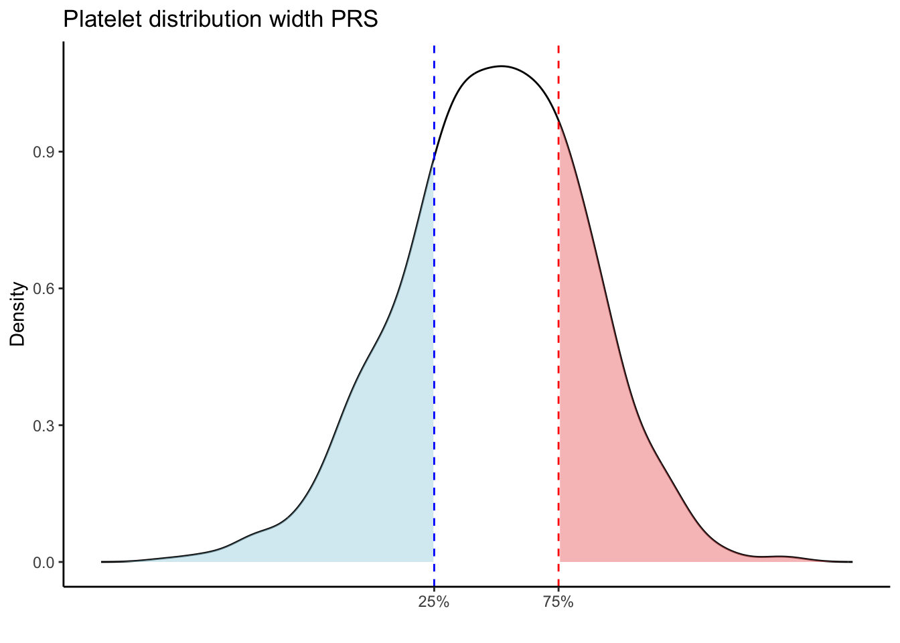
| Version | Author | Date |
|---|---|---|
| eba00c6 | ElisaChen | 2025-04-24 |
| Version | Author | Date |
|---|---|---|
| eba00c6 | ElisaChen | 2025-04-24 |
| Version | Author | Date |
|---|---|---|
| eba00c6 | ElisaChen | 2025-04-24 |
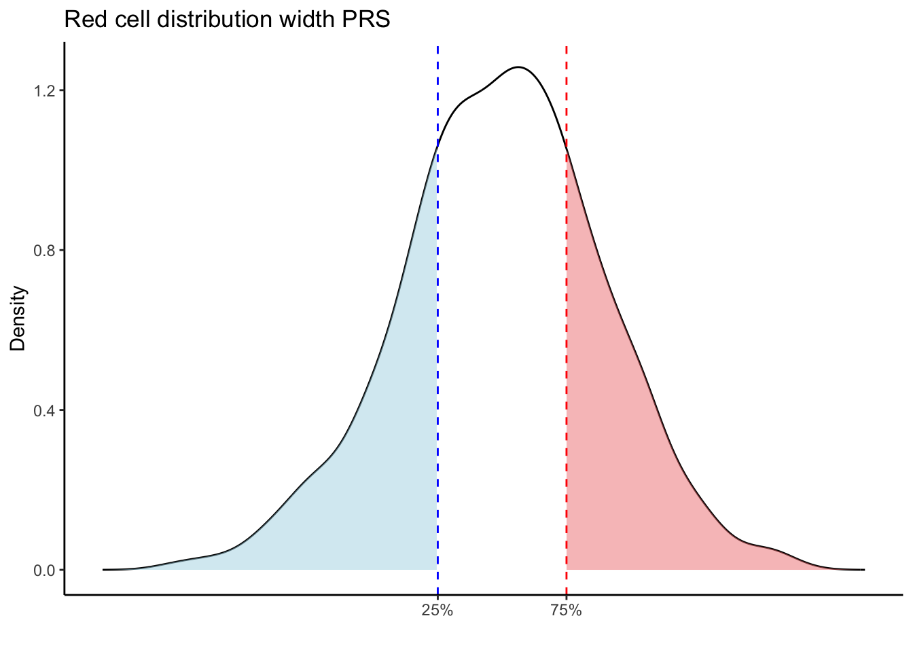
| Version | Author | Date |
|---|---|---|
| eba00c6 | ElisaChen | 2025-04-24 |
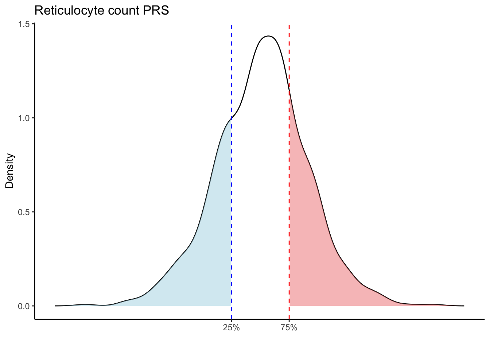
| Version | Author | Date |
|---|---|---|
| eba00c6 | ElisaChen | 2025-04-24 |
| Version | Author | Date |
|---|---|---|
| eba00c6 | ElisaChen | 2025-04-24 |
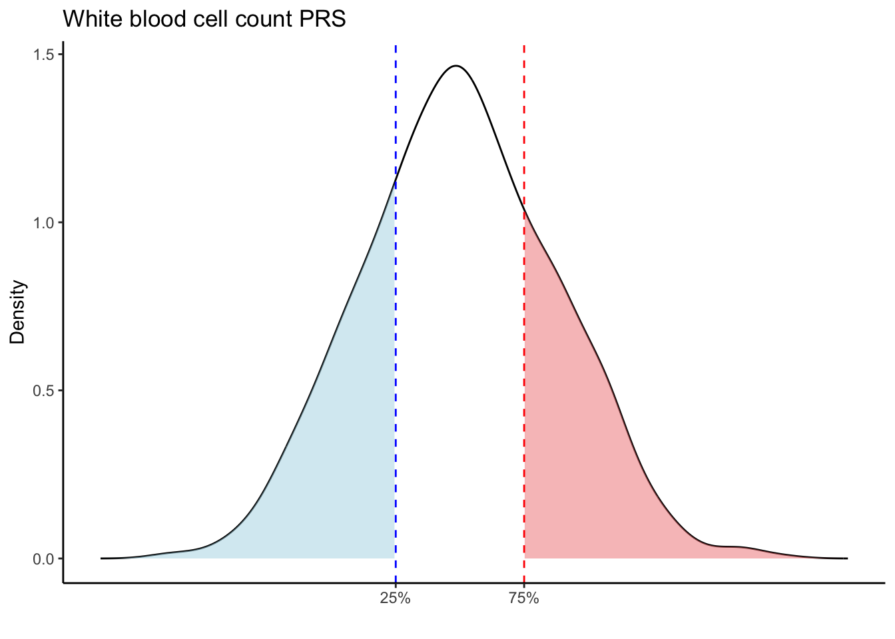
| Version | Author | Date |
|---|---|---|
| eba00c6 | ElisaChen | 2025-04-24 |
# Calculate the correlation matrix
cor_matrix <- cor(prs_blood[, -1], use = "pairwise.complete.obs")
# Create the heatmap using corrplot
pheatmap(cor_matrix,show_rownames = F, fontsize_col = 6.5,
border_color = NA, angle_col = 45)
| Version | Author | Date |
|---|---|---|
| eba00c6 | ElisaChen | 2025-04-24 |
Check the distribution of PRS for each immune trait
prs_immune <- fread("analysis/prs_immune.txt", header = TRUE,
stringsAsFactors = FALSE)
head(prs_immune) sample_id Celiac_GCST90014442 Celiac_GCST90468120 IBD_GCST90013901
<char> <num> <num> <num>
1: GTEX-1117F -0.32693209 -1.448741 -0.9787049
2: GTEX-111CU -0.15219597 -1.618983 -0.8481748
3: GTEX-111FC -0.04052229 -2.030101 -0.9549538
4: GTEX-111VG -0.47044719 -2.362654 -0.8591210
5: GTEX-111YS -0.26979202 -1.664964 -0.9357205
6: GTEX-1122O -0.29874466 -2.266667 -0.9111857
IBD_GCST90013951 T1D_GCST90000529 T1D_GCST90014023 LUPUS_GCST003156
<num> <num> <num> <num>
1: -1.0383590 -25.64693 -58.17413 -2.1789873
2: -1.0258023 -18.05505 -60.30144 2.2221766
3: -1.0904262 -11.69991 -58.65058 2.0571710
4: -0.9766343 -14.59983 -61.41665 0.9189866
5: -1.0311671 -3.54534 -60.34438 5.0958297
6: -1.0231325 -20.04924 -66.73086 -1.0720317
LUPUS_GCST011096
<num>
1: -1.844698
2: 2.258127
3: 2.237044
4: 1.147420
5: 5.118655
6: -1.105486# Summary statistics for each PRS column (trait)
summary(prs_immune[,-1]) Celiac_GCST90014442 Celiac_GCST90468120 IBD_GCST90013901 IBD_GCST90013951
Min. :-0.5946 Min. :-3.5320 Min. :-1.1602 Min. :-1.3853
1st Qu.:-0.3547 1st Qu.:-2.3761 1st Qu.:-1.0098 1st Qu.:-1.1617
Median :-0.2732 Median :-2.0377 Median :-0.9669 Median :-1.1063
Mean :-0.2616 Mean :-2.0164 Mean :-0.9661 Mean :-1.1042
3rd Qu.:-0.1704 3rd Qu.:-1.6654 3rd Qu.:-0.9269 3rd Qu.:-1.0480
Max. : 0.1226 Max. :-0.4657 Max. :-0.7623 Max. :-0.8907
T1D_GCST90000529 T1D_GCST90014023 LUPUS_GCST003156 LUPUS_GCST011096
Min. :-31.769 Min. :-68.94 Min. :-6.5371 Min. :-7.1746
1st Qu.:-20.145 1st Qu.:-62.44 1st Qu.:-0.7967 1st Qu.:-0.6102
Median :-16.173 Median :-59.62 Median : 2.0734 Median : 2.2687
Mean :-16.325 Mean :-59.93 Mean : 1.5832 Mean : 1.7587
3rd Qu.:-12.623 3rd Qu.:-57.30 3rd Qu.: 3.7490 3rd Qu.: 3.9703
Max. : -2.541 Max. :-47.85 Max. : 8.1614 Max. : 8.4091 # Loop through each PRS trait
for (trait in names(prs_immune)[-1]) { # Skip the sample_id column
# Get the data for the current trait
trait_data <- prs_immune[[trait]]
# Calculate the 25th and 75th percentiles
p25 <- quantile(trait_data, 0.25, na.rm = TRUE)
p75 <- quantile(trait_data, 0.75, na.rm = TRUE)
# Calculate the density values for the trait
trait_density <- density(trait_data, na.rm = TRUE)
# Create a data frame from the density object
density_data <- data.frame(x = trait_density$x, y = trait_density$y)
# Create the density plot
p <- ggplot(density_data, aes(x = x, y = y)) +
# Plot the density curve
geom_line(color = "black") +
# Shade the area below 25th percentile (in light blue)
geom_ribbon(data = subset(density_data, x <= p25),
aes(x = x, ymin = 0, ymax = y),
fill = "lightblue", alpha = 0.5) +
# Shade the area above 75th percentile (in light red)
geom_ribbon(data = subset(density_data, x >= p75),
aes(x = x, ymin = 0, ymax = y),
fill = "lightcoral", alpha = 0.5) +
# Add vertical lines at the 25th and 75th percentiles
geom_vline(aes(xintercept = p25), color = "blue", linetype = "dashed") +
geom_vline(aes(xintercept = p75), color = "red", linetype = "dashed") +
scale_x_continuous(breaks = c(p25, p75), labels = c("25%", "75%")) +
labs(title = paste(trait, "PRS"), y = "Density", x = "") +
theme(plot.title = element_text(hjust = 0.5)) +
theme_classic()
# Print the plot for the current trait
print(p)
}
| Version | Author | Date |
|---|---|---|
| eba00c6 | ElisaChen | 2025-04-24 |
| Version | Author | Date |
|---|---|---|
| eba00c6 | ElisaChen | 2025-04-24 |

| Version | Author | Date |
|---|---|---|
| eba00c6 | ElisaChen | 2025-04-24 |
| Version | Author | Date |
|---|---|---|
| eba00c6 | ElisaChen | 2025-04-24 |
| Version | Author | Date |
|---|---|---|
| eba00c6 | ElisaChen | 2025-04-24 |
| Version | Author | Date |
|---|---|---|
| eba00c6 | ElisaChen | 2025-04-24 |
| Version | Author | Date |
|---|---|---|
| eba00c6 | ElisaChen | 2025-04-24 |
| Version | Author | Date |
|---|---|---|
| eba00c6 | ElisaChen | 2025-04-24 |
Compared to other traits, LUPUS_GCST011096 and LUPUS_GCST003156 traits are more sensitive to population substructures. The LUPUS_GCST011096 and LUPUS_GCST003156 traits show a bimodal distribution of PRS, which can likely be attributed to the presence of both non-European and European ancestry data in the GTEx data. These two groups may have distinct genetic backgrounds or environmental exposures, leading to differing risk profiles, and thus a bimodal distribution of PRS.
# Calculate the correlation matrix
cor_matrix <- cor(prs_immune[, -1], use = "complete.obs")
# Create the heatmap using corrplot
pheatmap(cor_matrix, show_rownames = F, fontsize_col = 7.5,
border_color = NA, angle_col = 45)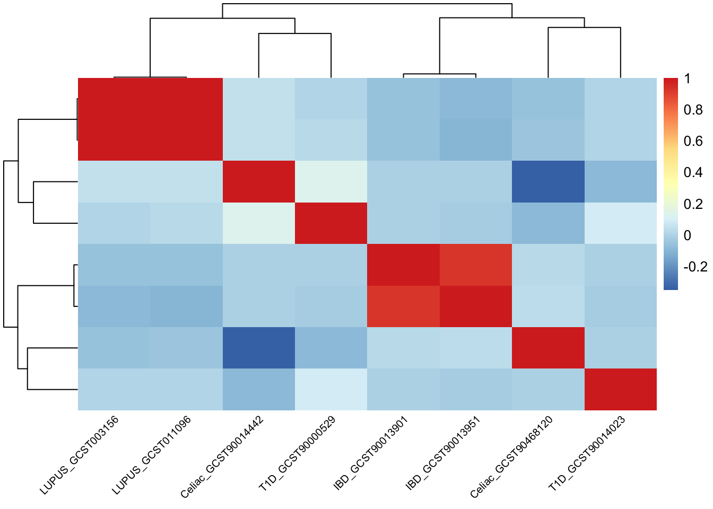
| Version | Author | Date |
|---|---|---|
| eba00c6 | ElisaChen | 2025-04-24 |
Similarly, PRS for the same trait is highly correlated.
sessionInfo()R version 4.2.2 (2022-10-31)
Platform: x86_64-apple-darwin17.0 (64-bit)
Running under: macOS Big Sur ... 10.16
Matrix products: default
BLAS: /Library/Frameworks/R.framework/Versions/4.2/Resources/lib/libRblas.0.dylib
LAPACK: /Library/Frameworks/R.framework/Versions/4.2/Resources/lib/libRlapack.dylib
locale:
[1] en_US.UTF-8/en_US.UTF-8/en_US.UTF-8/C/en_US.UTF-8/en_US.UTF-8
attached base packages:
[1] stats graphics grDevices utils datasets methods base
other attached packages:
[1] pheatmap_1.0.12 corrplot_0.95 ggplot2_3.5.1 bigsnpr_1.12.2
[5] bigstatsr_1.5.12 data.table_1.16.4 workflowr_1.7.1
loaded via a namespace (and not attached):
[1] tidyselect_1.2.1 xfun_0.50 bslib_0.9.0 lattice_0.22-6
[5] bigassertr_0.1.6 colorspace_2.1-1 vctrs_0.6.5 generics_0.1.3
[9] htmltools_0.5.8.1 yaml_2.3.10 rlang_1.1.5 jquerylib_0.1.4
[13] later_1.4.1 pillar_1.10.1 withr_3.0.2 glue_1.8.0
[17] RColorBrewer_1.1-3 rngtools_1.5.2 doRNG_1.8.6.1 foreach_1.5.2
[21] lifecycle_1.0.4 stringr_1.5.1 munsell_0.5.1 gtable_0.3.6
[25] codetools_0.2-20 evaluate_1.0.3 labeling_0.4.3 knitr_1.49
[29] callr_3.7.6 fastmap_1.2.0 doParallel_1.0.17 httpuv_1.6.15
[33] ps_1.8.1 parallel_4.2.2 Rcpp_1.0.14 promises_1.3.2
[37] scales_1.3.0 cachem_1.1.0 bigsparser_0.7.3 jsonlite_1.8.9
[41] farver_2.1.2 fs_1.6.5 digest_0.6.37 stringi_1.8.4
[45] bigparallelr_0.3.2 processx_3.8.5 dplyr_1.1.4 getPass_0.2-4
[49] cowplot_1.1.3 rprojroot_2.0.4 grid_4.2.2 cli_3.6.3
[53] tools_4.2.2 magrittr_2.0.3 sass_0.4.9 tibble_3.2.1
[57] whisker_0.4.1 pkgconfig_2.0.3 Matrix_1.5-1 rmarkdown_2.29
[61] httr_1.4.7 rstudioapi_0.17.1 iterators_1.0.14 rmio_0.4.0
[65] R6_2.5.1 flock_0.7 git2r_0.33.0 compiler_4.2.2